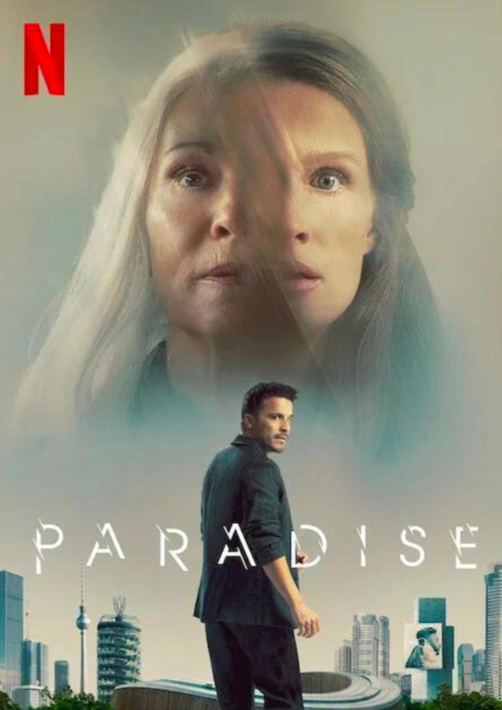

No hard feelings
- Calificación: 6.4/10
- Fecha de estreno: 22 de junio de 2023
- Duración: 1h 43m
- Sinopsis: Es una joven con problemas financieros que está a punto de perder su casa por las deudas. Bajo esas circunstancias, toma una decisión arriesgada al postularse para un trabajo poco convencional: seducir a Percy, un joven de 19 años que está a punto de comenzar la universidad.
- Género: Comedia
Culpa Mía
- Calificación: 6.2/10
- Fecha de estreno: 8 de junio de 2023
- Duración: 1h 57m
- Sinopsis: Noah debe dejar su ciudad, novio y amigos para mudarse a la mansión del nuevo marido de su madre. Allí conoce a su nuevo hermanastro Nick y sus personalidades chocan desde el primer momento.
- Género: Romance

Paradise
- Calificación: 6.3/10
- Fecha de estreno: 27 de julio de 2023
- Duración: 1h 58m
- Sinopsis: El mundo de Paradise se ubica dentro de una realidad distópica en toda regla. En un contexto futurista, una empresa biotecnológica, Aeon, tiene la capacidad de restar o sumar años a las personas.
- Género: Thriller
Rápidos y furiosos 10
- Calificación: 5.8/10
- Fecha de estreno: 19 de mayo de 2023
- Duración: 2h 21m
- Sinopsis: Dom y su grupo deberán enfrentar una nueva amenaza y proteger lo más importante para ellos: la familia. Por lo que hemos podido ver en el tráiler, el villano ha ideado un complot para separarlos por diferentes partes del mundo, incluyendo Roma, Brasil, Londres, Portugal y hasta la Antártida.
- Género: Acción
Misántropo
- Calificación: 6.4/10
- Fecha de estreno: 21 de abril de 2023
- Duración: 1h 59m
- Sinopsis: La película trata sobre un feroz ataque en Baltimore durante la noche de Año Nuevo que ocasiona 29 fallecidos, pero sin dejar alguna pista. Para descubrir la verdad, Eleanor Falco (Shailene Woodley) es reclutada por Geoffrey Lammark (Ben Mendelsohn), un agente especial del FBI.’
- Género: Suspenso
Choose Love
- Calificación: 5.2/10
- Fecha de estreno: 31 de agosto 2023
- Duración: 1h 17m
- Sinopsis: Choose Love es una película de comedia romántica interactiva. Los espectadores toman decisiones por el personaje principal Cami, interpretado por Laura Marano, mientras cuestiona su relación con su pareja Paul cuando otros dos hombres entran en su vida.
- Género: Comedia romántica
Los juegos del hambre
- Calificación: 6.2/10
- Fecha de estreno: 23 de marzo de 2012
- Duración: 2h 22m
- Sinopsis: En lo que alguna vez fue Norteamérica, la capital de Panem mantiene sus 12 distritos obligándolos a seleccionar a un niño y a una niña, llamados Tributos, a competir en un evento televisado nacionalmente llamado los Juegos del Hambre. Cada ciudadano debe ver pelear a muerte a los jóvenes. El Tributo del Distrito 12, Katniss Everdeen, solo confía en sus habilidades de caza y buenos instintos en un escenario en donde debe sobrevivir contra la humanidad.
- Género: Acción